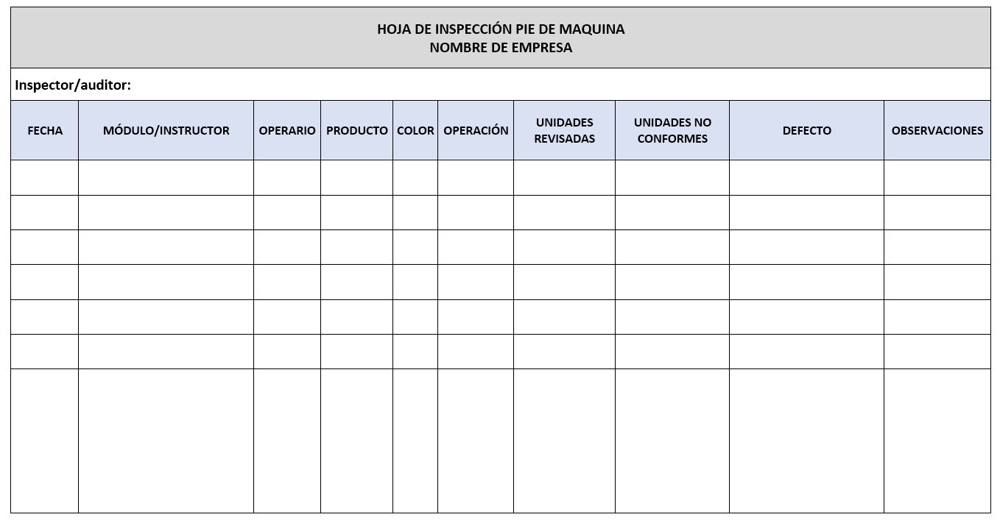

Introducción
Garantizar la calidad de un producto actualmente se ha convertido en un factor competitivo, el cual permite posicionamiento en el mercado y reconocimiento de la marca por parte del consumidor, es por ello que las empresas deben asegurar que su producción, en este caso textil, cumpla con los requisitos de diseño técnico y de la normativa aplicable al sector.
El control de procesos se aplica en todo tipo de industria, incluida la de la manufactura, en la cual se aplican sistemas de control que permiten documentar y hacer seguimiento a todo el proceso productivo, esto incluye “procedimientos documentados para todos los procesos clave; entendimiento claro del equipo y ambiente de trabajo adecuados para vigilar y controlar las características críticas de la calidad; procesos de aprobación para el equipo; criterios para la realización del trabajo como normas escritas, muestras o ilustraciones, y actividades de mantenimiento” (Evans & Lindsay, 2005).
En este sentido, identificar los requisitos de calidad exigidos de acuerdo con las especificaciones de la ficha técnica, lleva al área de producción a planificar el proceso de confección de acuerdo con la línea de producción y las especificaciones del producto, permitiendo así que el producto final se convierta en un producto de calidad que satisface por completo las necesidades del cliente y del mercado.
1. El proceso de control en calidad
“El control es la actividad que garantiza la conformidad con los equipos y emprende una acción correctiva cuando es necesario, a fin de solucionar los problemas y mantener un desempeño estable. Cualquier sistema de control tiene tres componentes: (1) una norma o meta; (2) un medio para medir los resultados, y (3) comparación de los resultados reales con la norma, además de retroalimentación con el fin de tener una base para la acción correctiva. Las metas y normas se definen durante los procesos de planeación y diseño; establecen lo que se supone que se debe lograr. Estas metas y normas se reflejan en las características de la calidad que se pueden medir, como las dimensiones en las partes producidas, número de productos defectuosos, quejas del cliente o los tiempos de espera. Los indicadores proporcionan la información acerca de lo que se logró realmente. Trabajadores, supervisores o gerentes evalúan si los resultados reales cumplen con las metas y las normas; de lo contrario, es preciso emprender una acción correctiva” (Evans & Lindsay, 2005).
1.1. Control de calidad
La evolución de la industrialización ha requerido ejercer control en los procesos para disminuir los desperdicios y los reprocesos en la producción, dado el mayor nivel de unidades producidas, es por ello que se recurre a la estandarización de procesos y de las características del producto fabricado.
Teniendo en cuenta lo anterior, revisar la producción proporciona mayor confianza en el cliente, mejora la competitividad y se convierte en una herramienta de control de la empresa.
Es importante mencionar los principios de la calidad para efectuar su control:
1.1.1. Concepto de calidad.
Dada la amplitud de definiciones existentes cada persona puede determinar su concepto propio, pero para comprender mejor a que se refiere la calidad se tendrán en cuenta las definiciones de los estudiosos del tema, entre los cuales se destacan:
W. Edwards Deming (1988), reconocido como el padre de la calidad, menciona el significado de calidad, como producir un producto a bajo costo con características medibles que satisfagan al cliente.
Kaoru Ishikawa (1988), entiende la calidad como el valor percibido por el cliente respecto a sus características técnicas, costo y funcionalidad del producto recibido; resalta el control en todos los procesos y las funciones de personas involucradas para obtener el producto más útil, más económico, y satisfactorio al consumidor final.
Armand V. Feigenbaum (2000), comprendió que el inicio de la calidad parte desde el diseño del producto y finaliza cuando el consumidor lo utiliza.
M. Juran (1993), concibe la calidad como un conjunto de características que satisfacen al cliente sin tener errores.
Philip B. Crosby (1996), resaltó en el concepto el cumplimiento de requisitos y de normas. Ilustra el efecto de la no conformidad y enfoca la atención en temas de prevención.
Teniendo en cuenta los términos de los estudiosos se puede determinar qué satisfacción, cliente, necesidades, mercado, expectativas son las palabras comunes, que engloban el concepto para concluir que la calidad adecúa el producto a las características especificadas y cumple con los requisitos, que satisfacen las necesidades y expectativas del cliente.
1.1.2. Concepto de control de calidad.
Una vez se tienen definidos los objetivos y los requisitos de calidad del producto, se entiende que se deben controlar las variaciones de esas características, cualidades o especificaciones exigidas sea por el cliente o de acuerdo con una norma.
Se conoce como control de la calidad, al proceso conformado por una serie de técnicas estadísticas aplicadas a procesos industriales para analizar el comportamiento de las variaciones de los requisitos del producto, con el fin de establecer acciones que mejoren el producto final y su calidad, en pro de aumentar las ventas y la productividad de la empresa.
El control de calidad no sólo está encaminado a las inspecciones del producto terminado, sino a las inspecciones durante el proceso de producción. “En los procesos de manufactura, el control casi siempre se aplica a los materiales que llegan, a los procesos claves y los productos finales” (Evans & Lindsay, 2005).
El cliente es la persona que adquiere el producto o servicio, puede o no utilizarlo y es quien paga por ello. Organizacionalmente se habla de cliente interno para referirse a los trabajadores, aquellos que intervienen en el desarrollo del producto, y el cliente externo es aquel que recibe y usa el producto
En todo proceso de control de calidad se habla de los requisitos, que no son más que la traducción de las necesidades y expectativas del cliente, se consideran tres niveles:
El principal objetivo del producto es ser funcional, resolver un problema, estar oportunamente, respetar el precio acordado y tener un tiempo de vida útil considerable; si estas características no se cumplen el producto genera insatisfacción.
El cliente espera un trato cordial y amable de forma que se sienta importante y genere satisfacción.
Todo cliente espera que el producto supere lo esperado inicialmente, lo cual se logra con la asistencia técnica, descuentos y optimización de los tiempos de entrega, esto incrementa el grado de satisfacción inicial.
También existen requisitos relacionados con:
Función del producto en referencia a su desempeño, responde a la pregunta ¿para qué sirve?
Características técnicas: cantidades, peso, tamaño, color, entre otras.
Condiciones de pago y precio.
Plazos de entrega.
Especificaciones dadas por el cliente.
Mantenimientos y vida útil como instrucciones de uso y términos de garantía.
Legales entre las cuales están: leyes y normas, rotulados, materiales, uso, manejo de residuos.
Conforme a lo mencionado anteriormente también se pueden clasificar los requisitos de acuerdo con las características directas del producto, de la organización o de externos, como es el cliente y la normatividad.
Dado que en el proceso productivo se presentan variaciones en los productos es preciso permitir tolerancias, las cuales son márgenes permisibles de variación en el producto final que no requieren rechazo.
1.1.3. Antecedentes y evolución de control de calidad.
LÍNEA DE TIEMPO

- A partir de la década de 1910.
- Especialización del trabajo.
- Inspecciones de producto terminado.
Control de calidad
- A partir de segunda guerra mundial, años 40´s.
- Estudios de métodos y tiempos para mejorar eficiencia.
- Procesos más especializados.
- Desarrollo de estándares.
- Uso de métodos de medición.
- Muestreos, gráficos, sistema de información, manuales, instructivos, formatos.
Aseguramiento de la calidad
- A partir de los años 60.
- Garantía de calidad.
- Cumplir con estándares.
- Reducir defectos.
- Creación de sistemas de calidad.
- Auditorías internas y externas.
Gestión de calidad
- A partir de los años 80.
- Participación de la dirección de la empresa.
- Mejora continua.
- Satisfacción del cliente.
Calidad total
- Círculos de calidad: trabajo en equipo.
- Desarrollo de personal: capacitación y entrenamiento.
- Se involucran todas las áreas y todas las personas de la empresa.
Excelencia de la calidad
- Suma de teorías y prácticas de calidad.
- Liderazgo en el mercado.
- Involucran todos los procesos.
- Mejora continua.
1.1.4. Control de calidad en industrial textil y confección.
En la industria textil y de confección se controla la calidad con el fin de mantener y corregir los defectos, errores o no conformidades que se presentan durante la producción de la prenda. Por tanto, se desarrolla según las variables y atributos del producto.

De acuerdo con lo mencionado, el control de la calidad en la industria textil se realiza en los procesos y en los recursos que intervienen en la producción de la prenda, desde el diseño, el patronaje, la selección de la materia prima para el caso la tela, los insumos entre los que se destaca el hilo; en confección las costuras; en el empaque, embalaje y entrega al cliente, asociadas a las características de cada proceso y de cada material.
El control de calidad se realiza en las siguientes fases:

1.1.5. Automatización en control de calidad en la industria textil y confección.
Se denomina calidad 4.0 a la relacionada con la revolución digital, teniendo en cuenta las tecnologías de big data, inteligencia artificial, machine learning, deep learning e internet de las cosas.
La automatización de los procesos proporciona agilidad, más seguridad en los datos porque disminuye la presentación de datos incorrectos y más conocimiento sobre cada área de la empresa. La implementación básica de la automatización se refiere a la utilización de software especializado en las herramientas de calidad, como por ejemplo, programas estadísticos como SPSS, STATGRAPHICS CENTURION, SAS, otros relacionados con el internet de las cosas, como la geolocalización con aplicaciones como los códigos QR, y las relacionadas con las herramientas de lean manufacturing.
Con la integración de datos y su tratamiento avanzado se pueden simular los procesos para mejorar la gestión de calidad virtual. Además, las personas encargadas directamente con la calidad pueden desarrollar actividades de manera remota sin necesidad de su presencia in situ en la empresa. También pueden apoyar en la planificación de auditorías, en el mejoramiento de implementación de la metodología de las 5S.
1.2. Gestión de calidad total
La Organización Internacional para la Estandarización (ISO), la define como “las actividades coordinadas para dirigir y controlar una organización en aquello relativo a la calidad. La dirección y control, en aquello relativo a la calidad, generalmente incluye el establecimiento de la política de la calidad y los objetivos de la calidad, el aseguramiento de la calidad y la mejora de la calidad” (ISO, 2005a).
Para realizar una gestión de calidad en la empresa se deben tener en cuenta los siguientes enfoques:
Enfoque al cliente: conocer al cliente requisitos y expectativas.
Enfoque estratégico: establecer los objetivos de calidad como claves en la visión de la empresa.
Liderazgo: enfocado en el compromiso positivo de la dirección de la empresa.
Enfoque en procesos: control de procesos.
Orientación a las personas: para aumentar el nivel de compromiso y satisfacción del cliente interno es necesario involucrar al personal y capacitarlo permanentemente.
Enfoque científico: evaluación de la calidad con evidencias y datos, es decir método científico.
Mejora continua, innovación y aprendizaje: todo proceso es susceptible de mejorar, no es solo corregir sino actuar de forma proactiva.
La comunicación interna también debe estar bien organizada, contar con un sistema de comunicación adecuado para evitar duplicidades de información que afecten negativamente la gestión de la calidad.
Para reconocer la gestión en los procesos se debe tener en cuenta el ciclo Deming de la calidad: Planear, Hacer, Verificar, Actuar (PHVA) sobre el cual se construyen los sistemas de gestión. En la siguiente figura se puede observar cómo se constituye el ciclo de la calidad para la mejora continua.
1.2.1. Cultura de calidad.
Es el conjunto de principios, valores y comportamientos que rigen la forma de actuar de un grupo de personas que hacen parte de la organización, y que trabajan de manera voluntaria para mejorar el funcionamiento de las áreas de trabajo, para que interactúen entre ellas y logren en equipo los objetivos propuestos en relación con la calidad del producto y la satisfacción del cliente. Su implementación requiere de capacitación efectiva y constante, interacción mediante comunicación asertiva y eficaz para seguir construyendo una cultura de calidad sólida.
La metodología sugerida para la implementación de esta cultura dentro de una organización son los círculos de calidad desarrollados por Kauro Ishikawa, quien creía que la calidad empieza con el cliente, y por tanto, comprender sus necesidades es la base para la mejora continua.
En la siguiente figura se aprecian los componentes de los círculos de calidad.
1.2.2. Metodología de mejoramiento continuo.
La metodología se encuentra enmarcada dentro del ciclo de mejoramiento continuo (PHVA) el cual, busca que la empresa sea más competitiva haciendo permanente la búsqueda de calidad, la participación es de todo el personal involucrado en la empresa, para que el mejoramiento sea constante.
Hablamos del método Kaizen, una estrategia desarrollada en Japón una vez terminada la II guerra mundial y que tiene por objetivo maximizar la producción mediante la mejora continua en los procesos productivos de la empresa, lo que permite reducir las ineficiencias para aumentar la competitividad en el mercado.
De acuerdo con el OBS Business School (s.f.) “esta filosofía aboga por la participación de todos y el involucramiento comprometido de cada individuo orientada a una mejora. En otras palabras, si bien la mayoría de los cambios pueden no resultar ser de grandes dimensiones, su impacto sí es susceptible de impulsar repercusiones significativas, en especial cuando se orienta a transformaciones dirigidas por la alta dirección de proyectos y cuando se aplican sus preceptos por parte de equipos multifuncionales”.
Bajo la óptica de Kaizen, todos los empleados son responsables de identificar los vacíos e ineficiencias. Todo el mundo, en todos los niveles en la organización, está habilitado para sugerir mejoras que pueden aplicarse en su área de interés. En la práctica, el método Kaizen funciona de la siguiente forma
Establecimiento de metas claras y realistas, bien documentadas.
Revisión del estado actual de la situación y desarrollo de un plan de optimización.
Implementación de mejoras.
Revisión y aplicación de las correcciones necesarias.
Elaboración de un informe de resultados y determinación de los elementos de seguimiento.
Los elementos del método Kaizen son:
Trabajo en equipo
Disciplina personal
Moral mejorada
Círculos de calidad
Sugerencias para la mejoría
Para iniciar su aplicación se debe considerar el análisis del problema, en la siguiente figura se puede observar el análisis de los diferentes aspectos para tener en cuenta:
A continuación, se pueden observar los 13 pasos de la metodología Kaizen.
Las ventajas de aplicar el método Kaizen no se limitan a un aumento de la productividad sino que se trasladan a otros ámbitos, contribuyendo a lograr:
Disminución de la generación de residuos: al ganar en eficiencia y utilizar mejor las habilidades de los empleados se minimizan los desechos, todos esos elementos que no producen valor
Aumento de los niveles de satisfacción: un hecho que tiene un impacto directo en la forma en que se hacen las cosas, iniciando un ciclo de motivación que se mantiene en el tiempo.
Mayor grado de compromiso: los miembros del equipo presentan un mayor interés en su trabajo y son más proclives a comprometerse con las metas de la organización.
Mejores tasas de retención del talento: cuando las personas se encuentran satisfechas y motivadas son más propensas a quedarse, ya que no necesitan buscar en otros lugares lo que ya han conseguido y les depara un futuro prometedor.
Incremento de la competitividad: el aumento de la eficiencia contribuye a lograr costos más bajos y productos de mejor calidad, mejorando el posicionamiento de la empresa en el mercado.
Impulso a los niveles de satisfacción de los consumidores: que obtienen un mejor servicio y se benefician de productos de mayor calidad y con menos defectos.
Optimización de la resolución de problemas: al enfocar los procesos desde una perspectiva de búsqueda de soluciones, los propios empleados están capacitados para resolver problemas de forma continua.
Fortalecimiento de los equipos: al trabajar juntos para resolver problemas, gracias al método Kaizen se fortalecen los vínculos y se construyen equipos mejores y más resistentes, preparados para afrontar cualquier desafío” (OBS Business School, s.f.).
1.2.3. Six sigma.
Es un sistema de gestión de calidad, enfocado en la mejora de procesos creada en la década de los años 80 por Bill Smith, la metodología combina herramientas estadísticas para mejorar el nivel de desempeño de un proceso, se centra en la reducción de la variación o dispersión, logrando minimizar o eliminar los defectos y fallos en la entrega de un producto al cliente, su meta es llegar a un máximo de 3,4 defectos por millón de eventos u oportunidades.
“Este sistema está enfocado en primer lugar al cliente, por lo cual se requiere contacto estrecho y conocimiento de sus necesidades, en segundo lugar este tipo de proyectos generan importantes retornos sobre la inversión, y en tercer lugar, este sistema cambia el modo de operar por parte de la dirección, dando lugar a un nuevo enfoque sobre la forma de pensar, planificar, y ejecutar las actividades y procesos”. León (2009)
El método se basa en la metodología DMAMC, que permite desarrollar mejoras siguiendo estos pasos:
1.2.4. Costos de calidad.
Como ya se conoce, la meta general de la empresa es ser rentable y generar ganancias, por eso la relación de la calidad con el precio se debe analizar, concientizando al personal de su importancia. La clasificación de los costos de calidad ayuda a entender y concientizar sobre la importancia de su control en el proceso productivo.
En la siguiente figura se puede observar los tipos de costos de calidad:
1.3. Sistema de gestión de la calidad: norma ISO 9001:2015
El sistema de gestión de la calidad es una herramienta administrativa, cuenta con una estructura organizada para integrar todos los procesos, integrando los elementos necesarios para lograr cumplir las necesidades y expectativas del cliente.
Obtener la certificación es evidenciar la capacidad que tiene la empresa de cumplir con los requisitos, además permite que la organización opere de forma más eficiente, identifique riesgos y los aborde oportunamente, cumpla con los requisitos reglamentarios y llegue a nuevos mercados. Una vez certificada la empresa la vigencia del sello de calidad es de 3 años, durante los cuales se realizan auditorías de seguimiento por parte del ente certificador y una vez pasados los tres años se debe realizar una auditoría para la renovación. La certificación es una constancia de valor a nivel internacional.
El enfoque de la norma está basado en los procesos, en donde la empresa demuestra la gestión y control de cada una de las interacciones entre los procesos y las jerarquías funcionales de la organización. Este sistema busca mejorar la eficiencia y eficacia de los procesos para lograr los objetivos planeados y así aumentar la satisfacción del cliente y de sus requisitos. La norma específica qué debe hacerse, pero no cómo hacerlo, entonces se constituye en una guía para lograr la calidad; para la norma es primordial que la información se encuentre documentada.
Basada en los principios de gestión de calidad, la norma ISO 9001:2015 define el modo en el que una organización funciona para cumplir con los requisitos de sus clientes y accionistas:
Orientación al cliente.
Liderazgo.
Participación del personal.
Enfoque basado en procesos
Contexto organizativo.
Mejora continua.
Toma de decisiones basada en hechos.
Razonamiento basado en riesgos
2. Ficha técnica y muestra física
Recuerde que para el control de los procesos se utiliza la ficha técnica, una guía fundamental para establecer controles de producción y calidad, la cual se adecúa según el proceso desarrollado y describe la información de la referencia a producir, el modelo, número de piezas, medidas de patrones y prenda, materia prima e insumos, ruta operacional y especificaciones de calidad.
A partir de la ficha técnica se desarrolla la muestra física, es decir la demostración física del producto a fabricar, el cual se convierte en la guía del proceso productivo y en el elemento clave de las ventas.
2.1. Concepto y uso de ficha técnica
La ficha técnica es la mejor herramienta en la empresa de confección, porque es la guía que contiene todas las especificaciones y requisitos en cada uno de los procesos para así poder desarrollar la producción de determinada referencia o modelo.
Este instrumento toma importancia en el proceso de confección ya que permite estandarizar el producto, controlar la calidad y la producción, establecer una adecuada organización de líneas de producción y proporciona la información para la gestión de compras de materiales, aspectos fundamentales para el logro de la calidad de los productos terminados.
La ficha técnica se usa conforme el proceso que se está desarrollando, los inspectores de calidad, los supervisores, los jefes de calidad, producción y compras requieren de la información contenida en este formato, para que comunique de manera concreta, clara y precisa los requisitos de la prenda con el fin de prevenir los defectos, y también el flujo operacional óptimo obteniendo la productividad proyectada.
2.2. Partes de ficha técnica
Vale mencionar nuevamente que las partes de una ficha técnica son:
Rótulo o encabezado de la ficha técnica: describe la información de la empresa.
Cuerpo de la ficha: contiene la mayor información, especificando según el proceso las características de la prenda.
Tablas y dibujos: con el fin de ser un apoyo visual, teniendo en cuenta que la ficha técnica es una aplicación de la técnica de Poka -Yoke. Con la utilización de tablas y dibujos es más fácil describir medidas, hoja de ruta, modelo, planos y piezas.
Control del documento: identifica a los responsables en el proceso de elaboración de la ficha técnica.
Glosario: lista los términos y expresiones utilizadas en el documento, de forma que permita su total comprensión.
Tenga en cuenta que el orden de la ficha debe estar conformado según el orden de los procesos de confección, es decir ficha de diseño, patronaje, producción y calidad; así mismo es necesario anexar fotografías para apoyar el proceso de control de calidad y el glosario de términos con el fin de convenir y aclarar los términos técnicos que pueden variar, por ejemplo, en diferentes zonas del país.
2.3. Manejo e interpretación ficha técnica
Una vez se crea el formato el diligenciamiento de este es realizado por el personal encargado del área de diseño y desarrollo de producto.
El inspector de calidad es quien maneja la ficha técnica del producto, debe entender las medidas de los patrones y cuando la prenda está terminada hacer las inspecciones tanto en el desarrollo del proceso como en la prenda terminada.
En el proceso de confección la hoja de ruta es primordial, ya que permite interpretar el paso a paso de cada operación, para realizar las inspecciones del producto terminado y del producto en proceso.
2.4. Definición y características de la muestra física
La muestra física es la demostración tangible del producto a fabricar, expone de manera real lo que es el producto para fabricar o vender y debe ser fiel a la ficha técnica y viceversa. La muestra física hace parte del paquete técnico, que junto con el patronaje de la prenda aseguran el desarrollo óptimo del proceso, además la muestra de la referencia a producir debe mostrar los requisitos de calidad, para que así mismo sea la guía en los diferentes procesos de confección.
Respecto a lo anterior la muestra debe estar disponible tanto al cliente por parte del vendedor quien la da a conocer, y en la planta de producción en el módulo donde se confeccionará para analizar y comparar las diferentes operaciones que la componen.
Es importante tener en cuenta que la muestra física junto con la ficha técnica es necesaria para la gestión de la producción y del control de la calidad.
3. Puntos de control de calidad en el proceso de confección
Dada la competitividad del sector de la confección industrial, es muy importante que todo el personal que trabaja en la planta de producción esté al tanto a la estrategia global del negocio, de la importancia que tiene cada uno de los clientes y de los costos de producción; de esta forma pueden comprender la dimensión de los errores que se pueden causar en el proceso de manufactura.
Con este precedente, es necesario que cada operador de la línea de producción se enfoque para que el producto fabricado cuente con las especificaciones técnicas definidas para el proceso y las expectativas del cliente, ya que de la calidad del producto recibida, dependerá la continuidad del cliente y por ende de las ventas. Para cumplir con este objetivo, es fundamental tener en cuenta los puntos de control dentro del proceso de manufactura del producto y que se explican a continuación.
3.1. Puntos de control en patronaje
Se debe establecer la diferencia entre los puntos de control y los puntos de control crítico, para tener claridad en el control de calidad de la prenda. Una vez se analiza el flujo de los procesos mediante los diagramas de operaciones y flujogramas, se determina en el proceso y en la prenda, los puntos a inspeccionar según su relevancia y así se establece la clasificación.
En el patronaje se debe inspeccionar el número de piezas, anchos de costuras, medidas de patrón y de prenda terminada. Además, las medidas en cortes para la unión de piezas, cada lado a unir debe corresponder exactamente, se debe disponer del tiempo necesario para realizar la revisión sea en un patrón manual o en el programa especializado.
En el momento del desarrollo del producto se debe realizar la inspección, de tal forma que se compare junto con la muestra y así pueda ser aprobada y pasar a los procesos de producción.
3.2. Puntos de control en trazo y corte
En el momento de desarrollar el trazo, antes de imprimir en el caso que sea digital y antes de realizar el extendido de la tela; se debe inspeccionar el trazo, revisando la correspondencia de piezas y distribución de tallas teniendo en cuenta el orden de producción, ancho de trazo y ancho de tela.
En el corte se debe revisar una vez se termina de extender y antes de iniciar el corte las unidades de capas y alineación del tendido, la apariencia de la tela, también tener cuidado de la separación del corte, sobre todo en el caso de si se han extendido diferentes rollos de tela en el mismo corte. Se debe revisar el cumplimiento de tiempos de reposo.
En la separación, tiqueteado y paqueteo de las piezas, el inspector de calidad debe revisar el corte de las piezas al comparar con el patronaje de la pieza, contar las piezas del paquete, el sistema de amarre y rotulado. Es importante disponer de un puesto de trabajo para la inspección con excelente luz y limpieza para determinar defectos en la tela y en el corte de las piezas. Así mismo, la disposición de las piezas para evitar contaminaciones del paquete con otros colores, por ejemplo, de la referencia
3.3. Puntos de control en confección
Teniendo en cuenta los procesos dentro de la confección de las prendas, comprendidos por operaciones de preparación, ensamble y terminados, así mismo se establecen puntos de control en las áreas, es importante establecer los puestos de calidad, en donde se realizan las inspecciones por el inspector de calidad; en el caso que el sistema de la planta sea modular, cada módulo debe disponer del puesto de calidad.
Cada puesto debe disponer de las herramientas para realizar mediciones y formatos, además de una ubicación estratégica dentro del área.
3.3.1. Puntos de control en producto en proceso.
Aunque es importante la implementación de auto calidad en cada operario, de igual manera se deben realizar las inspecciones llamadas “en pie de máquina”; se realizan mientras el operario desarrolla la operación en su puesto de trabajo, con el fin de detectar de manera temprana defectos, además de establecer acciones de mejora.
Cuando al producto se le realizan procesos de estampación o bordados se requiere establecer puntos de control de esos procesos, los cuales son puntos de control críticos.
3.3.2. Puntos de control en producto terminado.
Al finalizar la confección en cada módulo de producción o línea de la referencia, se revisa el producto terminado antes de realizar los procesos de planchado, de lavandería, empaque y embalaje; pero igualmente se debe inspeccionar una vez se realice el planchado si es requerido y su empaque.
Se deben establecer las medidas para la atención de prendas que no fueron aceptadas en las inspecciones y las acciones para su tratamiento.
3.4. Puntos de control en confección de lote piloto
El lote piloto son unas unidades que se confeccionan con el fin de simular la producción de cierta referencia nueva. Es necesario una vez se desarrolla el producto nuevo, realizar simulaciones para prever fallas en la producción; la información proporcionada una vez se realice el lote piloto brinda confianza y señala las estrategias a efectuar en el momento de la producción de la prenda.
3.5. Puntos de control en compras: materiales e insumos
En las áreas de bodegas y almacenes se deben realizar las inspecciones necesarias antes de la integración del producto, en donde se realiza el alistamiento de los insumos necesarios para la confección y se integran al paquete de las unidades cortadas, según las unidades establecidas. En el caso de telas se puede apoyar el control con equipos como revisadoras de telas para inspeccionar los defectos.
4. Documentación de calidad
Documentar los procesos permite tener un marco claro de trabajo en las operaciones de producción, y proporciona evidencias para el logro de la calidad esperada en el producto, es por ello que cada empresa puede diseñar su documentación con el fin de centrar sus procesos en la eficiencia y crear registros que documenten los procesos y se ajusten a la documentación solicitada en los estándares de calidad.
4.1. Ficha técnica
Como ya se ha mencionado este documento contiene las especificaciones de producción de las prendas, la información contenida en ella puede tener anexos como videos para especificar los métodos del desarrollo de la prenda. El formato puede ser diseñado y utilizado en programas de office como Word o Excel y los espacios creados deben ser diligenciados, tamaño y estilo de letra según normas APA.
Así mismo, las partes que componen la ficha técnica de producción deben cumplir con unos criterios de calidad:
Ficha técnica de diseño: especifica el diseño y muestra el dibujo plano, se pueden utilizar lupas para el acercamiento, desarrollado en programas como Corel, Illustrator o Audaces, el tamaño y dibujo es importante para guiar visualmente a la referencia correspondiente con la muestra física.

Ficha técnica de patronaje: el dibujo del despiece de las prendas puede copiarse del programa donde se desarrolló, debe ser de tamaño visible y claro, la información de las medidas proporciona el insumo para las inspecciones en los puntos de control. Es importante que se incluya la descripción del método de toma de medidas, de tal forma que sea unificado y no difiera según la persona que inspeccione.
Ficha técnica de producción: incluye listados en los que describe la materia prima e insumos requeridos en la prenda, especificando consumos para realizar el alistamiento en el almacén de insumos y el proceso de corte. En el listado de hoja de ruta se especifica el orden de las operaciones, el tiempo estándar, unidades meta por hora, maquinaria, utilización de plantillas, guías, pies, aditamentos y fólderes.
Ficha técnica de calidad: Describe los requisitos de confección de la prenda, acompañada de imágenes fotográficas, donde se puede visualizar la prenda terminada, en determinada operación y proceso. Indica los puntos de la prenda de más atención a controlar. Hace parte de la ficha de calidad, el anexo de la revisión de la prenda, para explicar el paso a paso del método de revisión, es un documento de apoyo para el inspector de calidad.
4.2. Orden de corte
Es un formato también llamado orden de producción, al diligenciar contiene la información de las unidades a confeccionar, la distribución por tallas y por colores, el consumo de las telas; brinda información para el control de inventarios.
En la siguiente figura se observa un ejemplo de orden de corte.
4.3. Máster de textiles e insumos
El formato registra la información de los textiles e insumos que se utilizan o se proyecta usar en las referencias de las prendas, con el fin de guiar en las compras de estos. La descripción de unidades, composiciones y normas aplicables, son los datos comprendidos en este documento que se desarrolla para cada insumo y tela, como se observa en la siguiente figura.
El compendio de todos los textiles o insumos forman el máster, según la clasificación puede ser de textiles o de insumos.
4.4. Registro de inspección de producto en proceso
En la inspección a pie de máquina, se debe tener claro el proceso para diligenciar el formato los requisitos de calidad exigidos, para registrar los defectos observados. En la siguiente figura se muestra un ejemplo del formato, es guía para la documentación de la empresa y contribuye en la gestión de calidad.
4.5. Registro de inspección de producto terminado
Es necesario codificar o tener un listado de defectos para diligenciar hojas de inspecciones. La recolección de la información entrega un indicador que luego se utiliza en la presentación de informes y el proceso de toma de decisiones para la mejora continua. La figura que se muestra a continuación ejemplifica el formato de registro.
4.6. Registro de inspección de lote piloto
Durante el proceso de desarrollo de producto se realizan ensayos o premuestras, la confección de un lote de unidades con el fin de obtener la muestra aprobada de la referencia para poder dar inicio a la producción de la prenda; de igual forma el proceso debe estar acompañado de inspecciones, el formato de registro de la inspección debe recolectar los defectos presentados, las causas y las recomendaciones para obtener la muestra y disminuir los riesgos de generación de errores durante la producción.
Glosario
Big data:gran volumen de datos complejos, los cuales mediante aplicaciones informáticas son utilizados para diversas aplicaciones para facilitar el análisis y toma de decisiones.
Deep learning:denominado en español aprendizaje profundo. Método específico de aprendizaje automático (machine learning) que se puede ver en aplicaciones de reconocimiento de voz e imágenes.
Defecto: es una no conformidad en características requeridas por el cliente o una norma y que causa incumplimiento del requisito y por tanto insatisfacción del cliente.
Desviación estándar:es la medida de dispersión más utilizada, muestra el nivel de los datos dispersos referente a la media (resultado del promedio de un conjunto de datos). Mientras mayor sea la desviación estándar, mayor será la dispersión de los datos.
In situ:es la expresión del idioma latino para decir “en el sitio”.
Inteligencia artificial:son los diversos programas y mecanismos que funcionan parecido a los humanos es decir muestran comportamientos inteligentes, como por ejemplo con los datos obtenidos realizar análisis predictivos.
Internet de las cosas:creado para conectar los objetos a internet con el fin de mejorar sus funciones en dichos objetos.
ISO:Organización Internacional de Estandarización, ubicada en Ginebra Suiza y tiene presencia en 193 países. Promueve y desarrolla normas para estandarizar productos y servicios.
Lote de producción:número establecido para una parte de la producción, la cual tienen características comunes y se agrupan dependiendo de un objetivo determinado; además, permite la trazabilidad del producto y de su proceso productivo.
Machine learning:o aprendizaje automático, es una forma de inteligencia artificial utilizada con el fin de mejorar la precisión de los modelos predictivos.
Muestra:número representativo de prendas del lote de producción, por medio de ella se deduce el cumplimiento de los requisitos de calidad de todo el lote.
Punto de control: son partes del proceso determinados con la metodología de árbol de decisión. Son las operaciones, fases o procesos en las que se requiere realizar inspecciones para controlar la ocurrencia de defectos, lo cual es una medida preventiva.
Punto de control crítico: operaciones, fases o procesos que requiere de riguroso control debido a que representa alto riesgo de presentar defectos y por tanto no cumplir con los requisitos.
Requisitos: pueden ser: (i) explícitos (declarados por el cliente), (ii) implícitos (necesarios para que cumplan función), (iii) legales o reglamentarios (de acuerdo con cumplir leyes), y (iv) de empresa (según las políticas de la empresa).
Sigma (σ):letra del alfabeto griego utilizada para representar la desviación estándar (unidad estadística de medición), representa la dispersión o variabilidad de un conjunto de datos.
Material complementario
| Autor, (año del documento o material), Nombre del documento o material. | Tipo de material ( Video, capítulo de libro, articulo, otro) | Enlace del Recurso o Archivo del documento o material |
|---|---|---|
| CANALCTA (2018), Qué es el Kaizen en 120 segundos | Video | Ver |
| Evaristo Gutiérrez, (2017), Calidad: instrumento capaz de garantizar el éxito de la gestión a largo plazo evolución del significado de calidad. | Descargar | |
| ISO (2015) Sistema de Gestión de Calidad 9001:2015 | Descargar | |
| León Lefcovich, M. (2009). Estrategia Kaizen. El Cid Editor | apuntes. | eLibro Biblioteca Sena | Ver |
| SENA (1990) Control de calidad en hilos y telas. | Repositorio Institucional SENA | Ver |
| SENA (2020) Documentación de calidad. | Archivo Word | Descargar |
| Socconini, L. V. y Reato, C. (2019). Lean Six Sigma: sistema de gestión para liderar empresas. Marge Books. | eLibro Biblioteca Sena | Ver |
Referencias bibliográficas
Arias de Valencia, A. (1978). Qué es control de calidad. Servicio Nacional de Aprendizaje (SENA).https://hdl.handle.net/11404/5988
Crosby P. (1994). La Calidad es libre. Madrid. Mc Graw Hill.
Deming, W. (1989). Calidad, Productividad y Competitividad. Díaz de Santos.
Evans , J. R., & Lindsay, W. M. (2005). Administración y control de calidad. Thomson.
Ishikawa K. (1994). Introducción al Control de Calidad. Díaz de Santos.
Juran. J. Gryna, F.M. (1993). Manual de Control de Calidad. Mc Graw Hill.
León Lefcovich, M. (2009). Preguntas y respuestas sobre Seis Sigma. El Cid Editor | apuntes.https://elibro-net.bdigital.sena.edu.co/es/ereader/senavirtual/31384?page=6
Mejía M, M. (1991). Control de calidad total: una manera diferente de orientar la dirección de la empresa [E-book]. Servicio Nacional de Aprendizaje (SENA). Consultado el 21 de septiembre de 2020 enhttps://hdl.handle.net/11404/3483
OBS Business School . (s.f.). OBS Business School . Obtenido de Project Managemnet:https://obsbusiness.school/es/blog-project-management/temas-actuales-de-project-management/metodo-kaizen-aplicacion-y-beneficios
Six Sigma Lean solutions. (2020). [Blog]. Consultado el 22 de septiembre de 2020, en http://leansolutions.co/conceptos-lean/que-es-six-sigma/
Fotografías y vectores tomados de https://www.shutterstock.com/ y https://www.freepik.es/
Licencia Creative Commons
CC BY-NC-SA
Ver licencia.